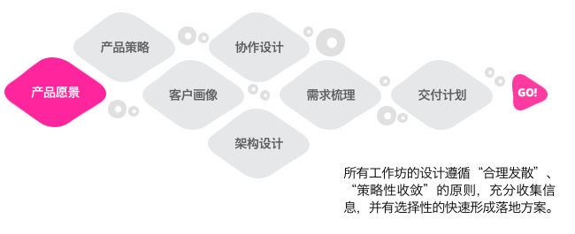
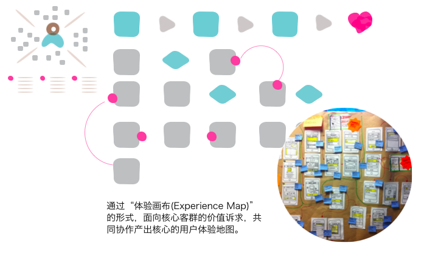
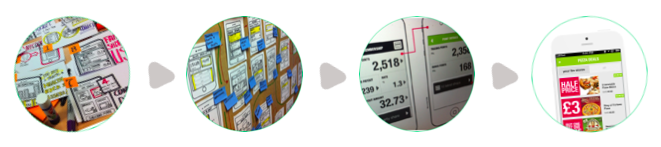
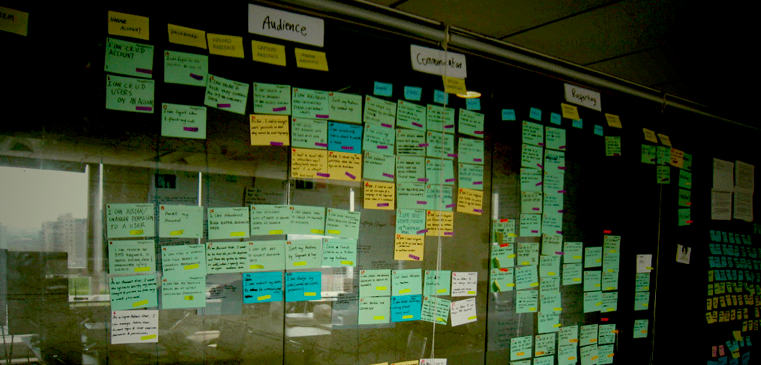
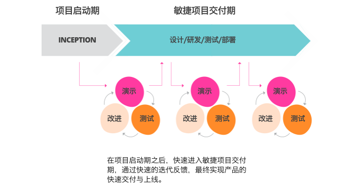

Inception是ThoughtWorks多年以来使用的启动软件设计和交付项目的方法，通过3天到两周的时间，采用集中式、互动式的设计工作坊，帮助客户在最短时间内达成对项目范围的一致，快速进入项目交付。
Y同学是我们最年轻的设计师，她问：

最重要的事情，我认为单词应该写对，是「硬塞噗婶」而不是「硬塞噗母」，然后我来用最轻松的、完全不同以往那么严肃的语调，讲讲什么是Inception。
问题
首先，让我们来到问题的情境当中，这个情境有以下几个元素：
- 一个企业
- 交付一个软件
- 解决一个业务问题
2001年，年轻的Luke叔叔和Marc叔叔还在爱深折工作的时候，就遇到了这样一个情境：
- 英国农业部
- 一个新的农业税计算平台
- 处理全国各个粮仓收粮时候的退税问题
Luke叔叔和Marc叔叔青葱少年自然依恋设计师自由的明媚、追求设计理想，然而现实并不是这样，他俩被安排写了9个月文档。
第十个月，英国农业部宣布农业税的重要改革，他俩的工作变成了然并卵。

年轻气盛的二人觉得「再也不能这样过，再也不能这样活」，毅然决然离开了公司，追求新的设计方式。
反思
这就是那个时代的故事，每个流程上的人，辛辛苦苦完成的工作，最后因为一个变动而变得毫无意义，聪明的二人开始反思：作为设计师的我们该如何面对更快的变化呢？
他们的思考逻辑是：
- 为什么变化可以让我们做的变得毫无意义？因为我们做的事情都基于某个「不会变化的假设」:农业部的税收制度在一年内不会变化；
- 事实上这些假设「被打脸」的频率从一年变成了9个月，而且会越来越高；
- 这些假设还来自于内部，领导在让我们写文档的时候说：「同志们，放心吧，真的不会变，写吧」，我们假设领导是对的；
- 我们能不能避免假设呢？似乎不能没有，不假设，不打包票，谁会干活？
- 那么在不能避免假设的情况下，我们要做的是降低「假设带来的潜在伤害」。
这就是Luke和Marc所思考的：
设计一种流程尽可能降低假设带来的潜在伤害。
假设
你发现你生长在一个充满假设的世界里，他们说市场不会变、他们说他们要的东西一定会成功、他们说他们完全理解你的意思、他们说改了这一版不会再改了，呵呵，都是骗子。
事实上，你的项目里，市场一定会变、他们说的东西根本就是个玩笑、他们根本不懂也不在乎你说什么、他们改了一版还之后的二百版。
为什么要有需求冻结，没有需求冻结，被玩死的是你，但是很遗憾，有了需求冻结，被玩死的可能是你的公司。
需求优先级中有「总裁需求」这样的定义，私下里，他们把这样的需求标记为「呵呵」。像一副牌里打出8对王炸，我就炸了，你咋滴！你之前听到的所有假设和承诺，全都不作数。
事实上，真正的王炸，可能来自市场，如果市场变化期缩短到6个月，意味这你所有的研发行为从想法到运营的时间，必须在6个月以内甚至更短，我把这个叫做「王炸周期」。
因此在做软件规划的时候，你如何能够保证从想法到投入市场，短于6个月？
Inception的最核心含义在于：
如何规划一个从想法到运营时间短于「王炸周期」的软件项目？
8年以来，这个周期变得越来越短，在某些极端情况下，你可能只有6周时间。
对策
变化的周期越短，我们就越需要去除更多的假设，一个软件项目的假设有很多，他们包括：
- 买单的人知道我们在干什么、怎么干；
- 设计师和客户之间对于解决方案达成了一致；
- 可以实现；
- 可以在一定时间内实现；
- 有用户愿意使用我们的服务。
- 未来运营的人认同我们的方案并表示可以继续运营下去；
我们也许不能保证这些假设都能够成立，但是「一分也是爱」，能验证一个是一个。
验证这些假设也不容易，你怎么能保证买单的领导没有新的想法？大部分人的思路是：我要做一个尽可能完美的方案，让领导挑不出毛病。你错了，你在「憋大招」的同时，领导也在「憋大招」，意思是你自信满满打出「王炸」的时候，领导打出了8个。
你怎么保证你的设计交付团队就能完成？拍着胸脯说放心吧这个简单的技术骨干拍屁股走人之后，你就哭吧，这时候他们打出「对三」你都要不起。
你怎么保证你的用户会使用你的服务？你大概知道中国创业产品的生命周期平均不超过8个月，你花8个月做的产品，可能够在市场上死两回了。
那你该怎么办？
做小、多验证假设。
最有做得小、你才有时间进行验证，这便是Inception的逻辑，把大部分的时间花在验证假设上，而不在研发上。
过程
之前提到的6大假设正是Inception活动的精髓所在，它们是：
- 验证利益相关者的战略；
- 验证设计有效性；
- 验证方案可行性；
- 验证方案实现时间的合理性；
- 验证产品有效性；
- 验证产品可运营性。
传统方式中，这些假设的验证通常通过一系列活动打散在公司的决策过程中，例如总裁例会讨论决策、用户研究和设计由不同服务提供商完成、交付由IT或外包完成、最后交给产品运营团队完成。
而Inception则尝试用最短的时间（短至1周）完成以上的6大验证。最简单的一条Inception逻辑是：

这个过程充满着视觉化的工作坊，协助组织内的利益相关者进行互动，共同识别问题、设计方案：

设计流程也是快速而逐层演进的，而绝不使用一个完美的设计方案：

Inception不仅仅是业务和设计的整合，还包含技术，我们会根据设计梳理出完整的交付列表，请注意，这一切都只发生在一周之内：

当然我们也会注意用户测试，这样的用户测试可能主要来自于企业内部，测试内容主要在可用性、而不在产品策略，关于产品策略的验证，将有其他更具备精益特征的服务方式覆盖。
而Inception和敏捷软件交付的关系则是：
- Inception负责明确足够进入交付的工作量，并尽可能地去除这个工作量中的假设；
- 敏捷软件交付则基于这个「足够的设计」进行不断地迭代交付和设计、并进行测试和改进。

总结
话说回来，Luke叔叔和Marc叔叔就是我们引以为傲的Inception的创立者，10多年来这套方法帮助我们启动了超过200个软件交付项目，包括现在所说的服务设计，其中的逻辑并不出其左右，在这个基础上，我们又演进出来1天、3天、2周、4周、甚至8周的版本，根据不同项目情况进行定制，而核心逻辑一直没有变化，它们是：
- 我们认为软件交付需要拥抱变化；
- 假设越多、变化时候成本越大；
- 我们要尽可能消除6大假设，包括：决策者、业务需求与设计范围、技术实现、交付时间、产品有效、和可运营性；
- 我们通过做小来降低消除假设所带来的成本；
- 我们通过丰富的设计和沟通实践降低消除假设所带来的成本；
- 我们只计划和设计足够启动的体验，进入迭代式的交付过程。
到后来Marc叔叔写了一本《Agile Experience Design》的书，而Luke叔叔管理着ThoughtWorks在欧洲区的业务，遗憾地是，在2014年的一场车祸中丧生，请爱穿花衬衣的Luke叔叔放心，中国的小伙伴早已把薪火一代代传了下去，也要谢谢你。